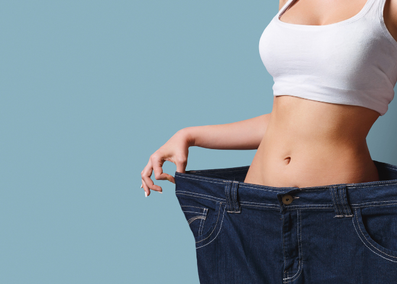

* Losing weight is a journey that takes time, effort, and dedication. Setting a goal to lose weight within a year is a healthy, realistic target that allows you to make sustainable changes to your lifestyle. This guide will walk you through a simple, effective plan to achieve your weight loss goals in 12 months without feeling overwhelmed.
The first step is to decide how much weight you want to lose. A safe, sustainable weight loss rate is 1-2 pounds per week, which equals about 50-100 pounds over the course of a year. Instead of aiming for drastic changes, focus on steady progress. Losing weight gradually is not only healthier but also helps you maintain your results in the long run.
Weight loss fundamentally comes down to burning more calories than you consume. Start by calculating your daily calorie needs based on your age, gender, weight, activity level, and fitness goals. There are various online calculators available to help you find your daily calorie intake for weight loss. Aim to create a calorie deficit by consuming fewer calories than you burn. A typical reduction of 500-1,000 calories per day can help you achieve that 1-2 pounds per week goal.
What you eat is just as important as how much you eat. Adopting a balanced diet full of nutrient-dense foods will help you feel satisfied while keeping your calorie intake in check.
Here are a few key tips:
Drinking enough water is crucial for weight loss. It helps your body function properly and can prevent overeating by keeping you full. Aim to drink at least 8 glasses of water a day, and try to replace sugary drinks with water or herbal tea.
| Category | Action | Details |
|---|---|---|
| Diet | Caloric Deficit | Eat 200-500 fewer calories daily to lose 0.5-1 pound/week. |
| Nutrition | Focus on Whole Foods | Prioritize fruits, vegetables, lean proteins, and whole grains. |